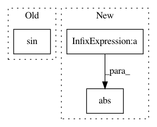

36348ae96fe8a290fbc19f00e860fa5938a179b7,batchflow/models/tf/nn/train.py,,cyclic_learning_rate,#Any#Any#Any#Any#Any#Any#,10
Before Change
if mode == "tri":
first_factor = (learning_rate-max_lr) / pi
inside_sin = 2. * pi / step_size * global_step
second_factor = tf.math.asin(tf.math.sin(inside_sin))
second_comp = (learning_rate + max_lr) / 2.
elif mode == "sin":
first_factor = (learning_rate - max_lr) / 2.
After Change
max_lr = tf.cast(max_lr, dtype=tf.float32)
if mode == "tri":
periodic_comp = tf.mod(((global_step + step_size / 4) / step_size), 1)
first_factor = tf.abs(periodic_comp - 0.5)
second_factor = 2 * (max_lr - learning_rate)
second_comp = learning_rate
elif mode == "sin":
first_factor = (learning_rate - max_lr) / 2.
In pattern: SUPERPATTERN
Frequency: 3
Non-data size: 3
Instances
Project Name: analysiscenter/batchflow
Commit Name: 36348ae96fe8a290fbc19f00e860fa5938a179b7
Time: 2019-09-12
Author: dimonovez@gmail.com
File Name: batchflow/models/tf/nn/train.py
Class Name:
Method Name: cyclic_learning_rate
Project Name: tiberiu44/TTS-Cube
Commit Name: ea8ee779a98cb1721f2669f1928b5faeee156648
Time: 2018-11-11
Author: tibi@racai.ro
File Name: cube/models/vocoder.py
Class Name: BeeCoder
Method Name: _get_loss
Project Name: geomstats/geomstats
Commit Name: 2d82884730e31cef02fe784d88fd9cc6920f5c39
Time: 2018-01-28
Author: ninamio78@gmail.com
File Name: geomstats/special_orthogonal_group.py
Class Name: SpecialOrthogonalGroup
Method Name: rotation_vector_from_matrix